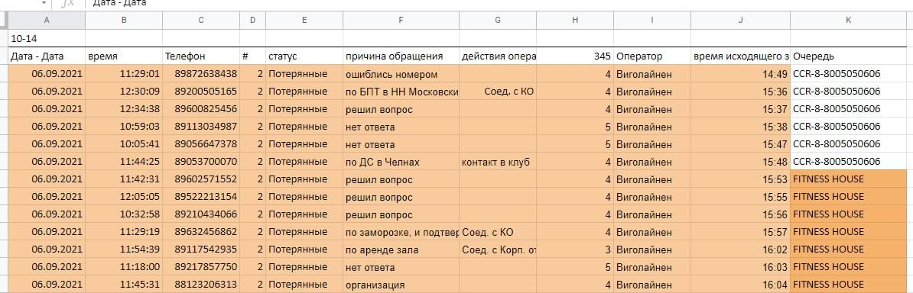
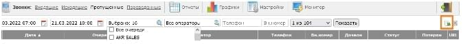
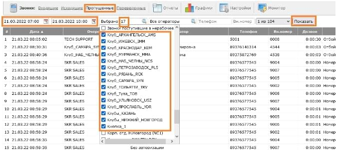
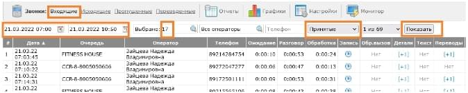
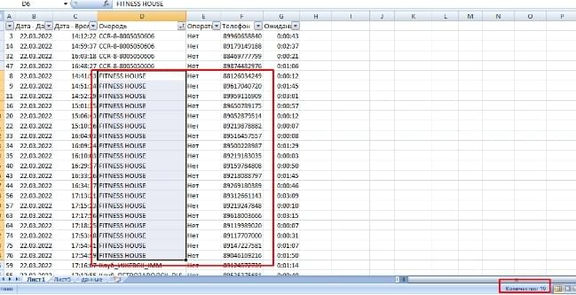

Основное
Дежурный работает с почтой и с файлами в папке на диске X "Дежурство" (там три файла):
В этот файл мы вносим контакты из чата в вк "контакты" и из почты.
Из этого файла контакты с датой мы передаем по почте в клубы (email - "отдел продаж" и "зам. упр.") с темой письма "Обратный звонок"
Листы:
- первый общий - вносим контакты по открытым клубам;
- бронь - это контакты из почты - папка - бронь с сайта;
- листы по городам - это контакты по конкретному клубу, который еще не открыт.
В этот файл мы заносим информацию по обзвонам после выгрузки.
Пример заполнения данных по обзвону.
{kind=link}
Обратите внимание на колонки:
- # - ставим "2", если нужно позвонить, ставим "1" - нет;
- Статус - Потерянные/Пропущенные;
- 345 - 3 - если продажа (зеленый), 4 - вопрос по сервису или уже нет вопросов (серый), 5 - нет ответа (красный);
- время звонка.
В этот файл мы переносим данные по количеству пропущенных и потерянных (с дублями/ без дублей/ на обзвон) + количество контактов, которые передали по почте.
Выгрузка
Выгрузку в день делаем три раза:
- В 10:00- c 7:00 по 10:00;
- В 14:00- c 10:00 по 14:00;
- В 18:00- c 14:00 по 18:00.
.accordion-body, хотя переход ограничивает переполнение..accordion-body, хотя переход ограничивает переполнение..accordion-body, хотя переход ограничивает переполнение.Входящие (потерянные)
Параметры для выгрузки(дата и интервал времени, линии, тип звонков - потерянные)
Линии (очередь) (на данный момент 17):
- CCR-8-8005050606
- FITNESS HOUSE
- ...
- Кнопка_1

Когда сформировали таблицу, можно нажать на колонку “очередь” для фильтрации линий и затем скачать файл:
Пропущенные
Параметры для выгрузки (дата и интервал времени, линии (очередь) (на данный момент 17))
Когда сформировали таблицу, можно нажать на колонку “очередь” для фильтрации линий и затем скачать файл:
Входящие (принятые)
Параметры для выгрузки (дата и интервал времени, линии, тип звонков - принятые)
Когда сформировали таблицу, можно нажать на колонку “очередь” для фильтрации линий и затем скачать файл:
Работы с файлами (потерянные, пропущенные, принятые)
Потерянные
{kind=link}
Два способа на выбор:
- Можно просто выделять и записывать на листочек или на новый лист в файле.
{kind=link}
- Можно сделать сводную таблицу для этой таблице и excel сам посчитает значения.
Создание сводной таблицы.
В таблице нужно встать на любую ячейку с данными и перейти на вкладку «вставка» и нажать на «сводная таблица».


На новом листе переместить из списка полей поле «очередь» в блок название строк, «телефон» - в значение с параметром количество.

На листе с таблицей потерянных встаем на ячейку в колонке «телефон», далее переходим на вкладку «данные» и нажимаем на «удалить дубликаты». Появится окно «удалить дубликаты». Нужно снять выделение со всех столбцов и выделить только столбец «телефон» и нажать «ок».

Далее нужно подсчитать количество телефонов по каждой очереди (два варианта - см. пункт 1) - это нужно будет для отчета.
Пример по второму варианту (сводная таблица). Можно скрыть колонку «C» для удобства.

Открываем таблицу принятых. Копируем таблицу потерянных без дублей (без заголовков - только данные) на лист с принятыми в конец пропуская пустую строку между таблицами.
Удаляем дубликаты по колонке телефон (см. пункт 2).
Копируем что осталось после удаления (снизу до разделителя - пустая строка) и вставляем на лист потерянных рядом с таблицей.

Далее нам нужно вырезать данные из таблице слева - можно выделить первую строку без заголовков, а затем нажать на клавиатуре ctrl + shift + стрелка вниз, а затем ctrl+X и вставить под таблицу справа пропустив пустую строку ctrl + V. Потом это все переместить влево под заголовки.
Удалить дубли - по полю телефон.
Что у нас получилось:
Вверху с заголовками и до пустой строки у нас те кому мы должны позвонить и узнать что им нужно.Нужно еще по этой таблице посчитать телефоны по конкретным линиям(очередям)
Пример по сводным таблицам

Смотрим очереди, если нет каких-то (например выше - Казань) - значит в отчете будет 0.
Пропущенные
По этим данным делаем все тоже самое + еще пропущенные сравниваем с потерянными для удаления дубликатов.